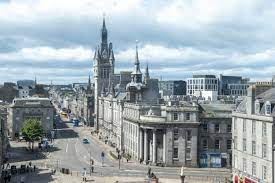

Aberdeen is a port city in northeast Scotland, where the Dee and Don rivers meet the North Sea. With an offshore petroleum industry, the city is home to an international population. It's also known as the ‘Granite City’ for its many enduring grey-stone buildings. The 19th-century Marischal College is typical – a monumental Victorian landmark that’s now headquarters of the City Council
Click the text here to see where Aberdeen is on the map
What is Aberdeen Most Famous For?
Aberdeen is historically known for its strong ties with the North Sea.
Boasting notable fishing and shipping industries as well as a lively cultural scene, the third largest city in Scotland is a multi-faceted place which offers its visitors a broad range of things to see and do.